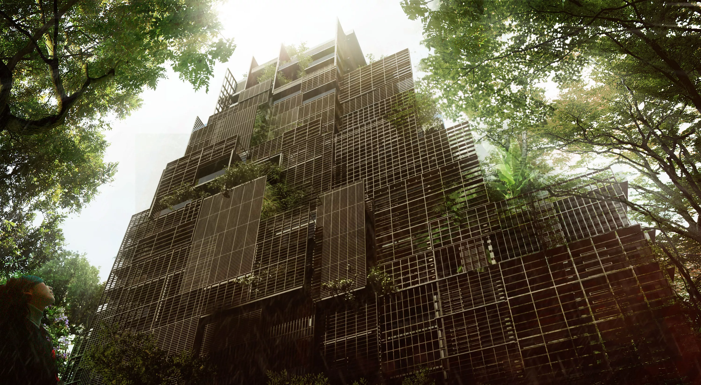
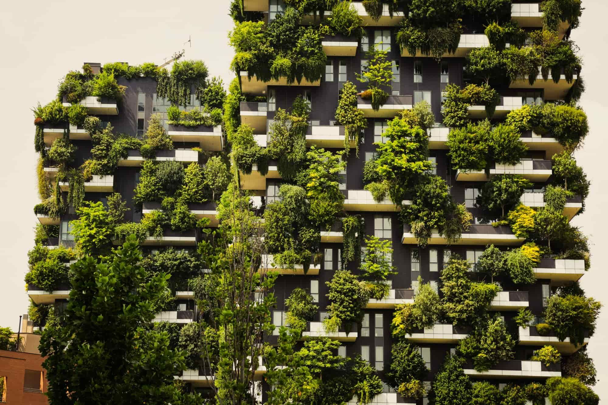

Edifícios Inteligentes
By Variant
Introdução aos Edifícios Inteligentes e Sustentáveis
A urbanização crescente e as mudanças climáticas têm aumentado a demanda por soluções que combinem tecnologia e sustentabilidade para reduzir a pegada ecológica das cidades.

Relevância no contexto atual:
Edifícios inteligentes são essenciais para cidades inteligentes, contribuindo para a sustentabilidade e qualidade de vida urbana. Eles utilizam tecnologia para gerenciar recursos de forma eficiente, reduzindo o consumo de energia e água. Isso melhora o conforto dos habitantes e minimiza o impacto ambiental.

Rosewood Hotel - SP
O Rosewood São Paulo, projetado por Jean Nouvel, é um ícone de luxo sustentável. Com jardins verticais e arquitetura contemporânea, o hotel harmoniza natureza e design moderno. Utilizando materiais locais e práticas ecológicas, oferece uma experiência sofisticada e consciente.


A Tecnologia por Trás dos Edifícios Inteligentes
Sensores são responsáveis por monitorar diversas condições internas e externas, como temperatura, iluminação, qualidade do ar, presença de pessoas e até níveis de umidade.